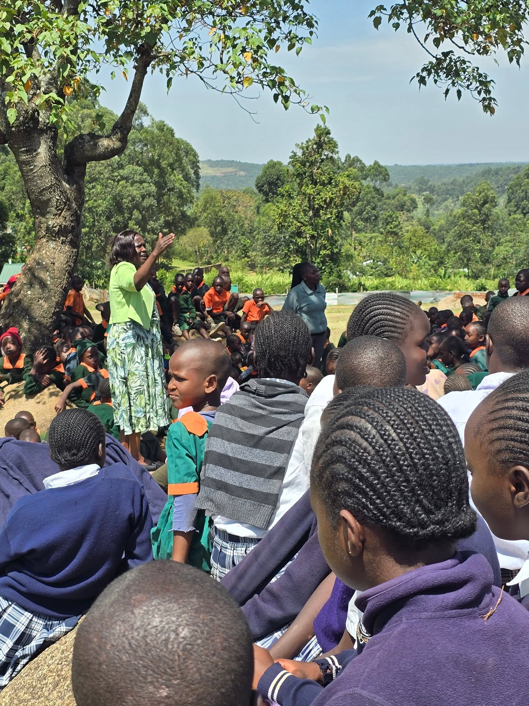

Vision
A society where every woman, widow, and young person is seen, valued, and empowered free from addiction, poverty, and exclusion.
An independent, non-partisan Public Benefit Organisation serving women, widows, youth, and persons with disabilities,turning lived experience into lasting institutions of care.
Background & Registration
The Tecla Tum Foundation is registered under the Public Benefit Organisations Act. It operates as an independent and non-partisan entity serving women, widows, youth, and persons with disabilities (PWDs).
The Foundation was established to carry forward a body of community work into a permanent, sustainable, and community-driven institution one accountable to the people it serves.

Vision, Mission & Core Values
A society where every woman, widow, and young person is seen, valued, and empowered free from addiction, poverty, and exclusion.
To lift the vulnerable by restoring hope to young people trapped in addiction, unlocking the economic power of women through agriculture, defending the dignity and rights of widows, and equipping women to lead their communities toward climate resilience.
Core Values
Everyone served is a partner in their own transformation.
Meeting people where they are and moving with them.
Women, youth, widows, and PWDs placed at the center.
Transparent stewardship of resources and relationships.
Solutions designed and sustained by local people.
Founder's Story
From the lecture hall, to municipal service, to the floor of Parliament a consistent thread of service to the vulnerable.
Academic background at the University of Nairobi, Moi University, and the University of Denver. Former lecturer at Moi University and Kisii University. Ford Foundation Alumni.
Launched a drop-in centre programme for street children, built on PhD research later continued in partnership with UNICEF.
Elected with over 92% of the vote. Sourced bursaries and seed capital, provided dairy cows for PWDs, and sponsored the Kaprisang rehabilitation centre. Upgraded 162 grass-thatched houses and distributed 200 'meko' clean cookstoves.
Transitioning from term-limited public office to a permanent, sustainable, community-driven initiative one that outlasts any single term.
Implementation Model
Programmes are delivered through structures that already exist in the community not imposed on top of them.
Managed by local champions who live in the communities they serve.
Addressing complex household vulnerabilities simultaneously, not in isolation.
Working with national and county services, churches, and civic groups.
Work With Us
See how the four pillars translate into measurable change on the ground.